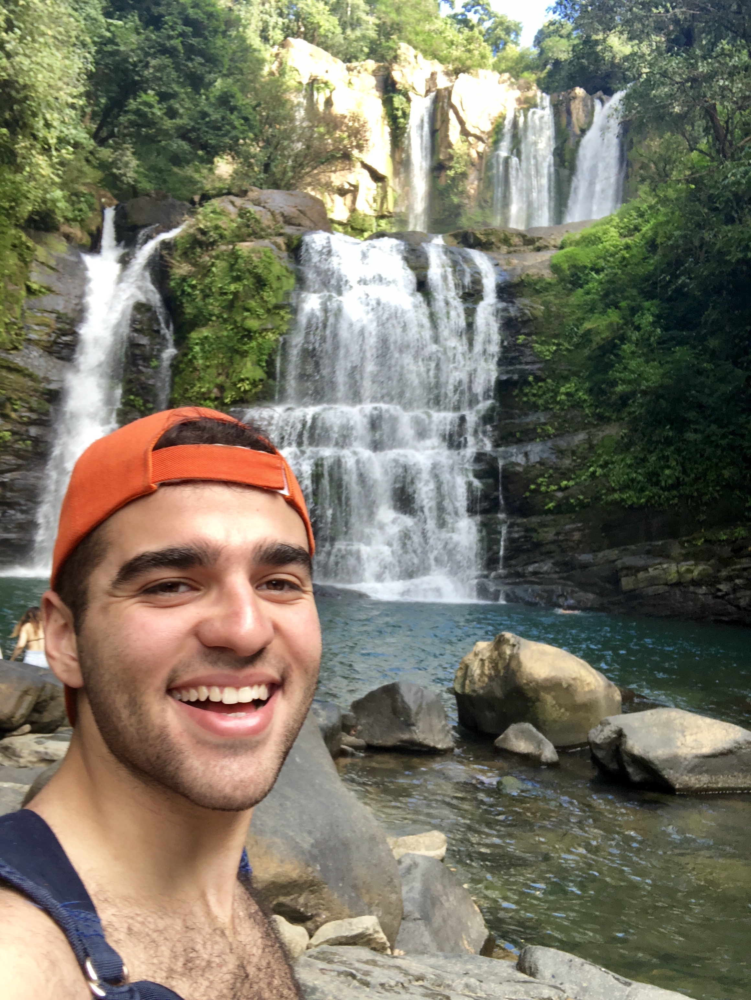
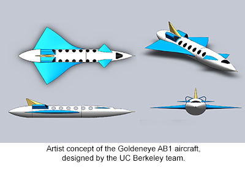
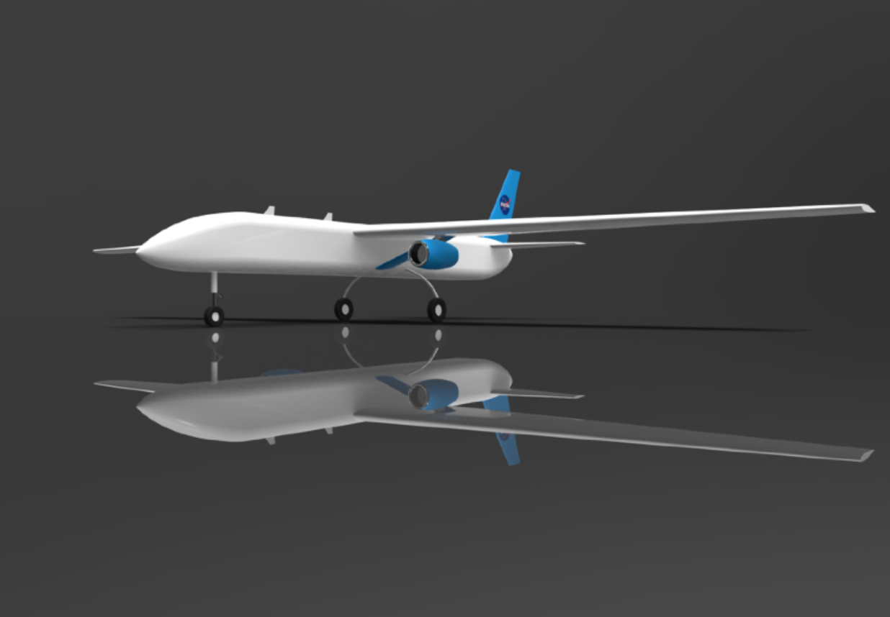
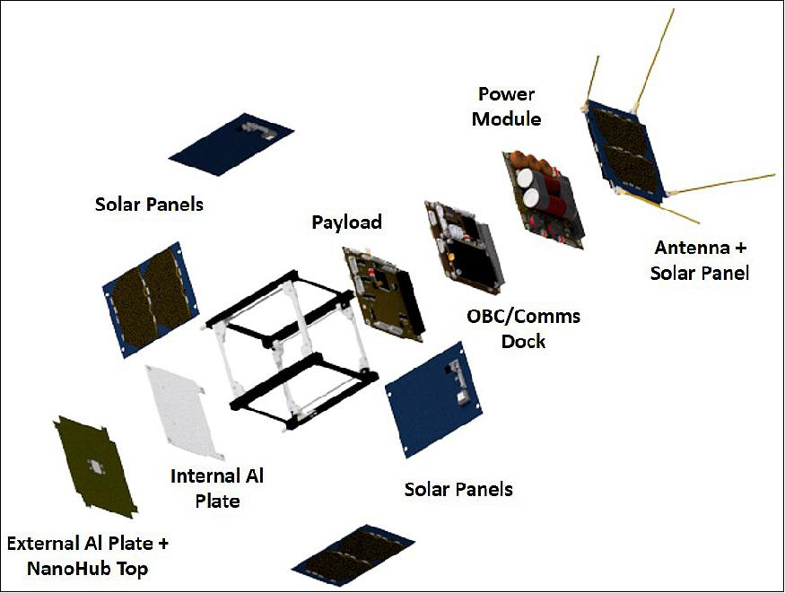
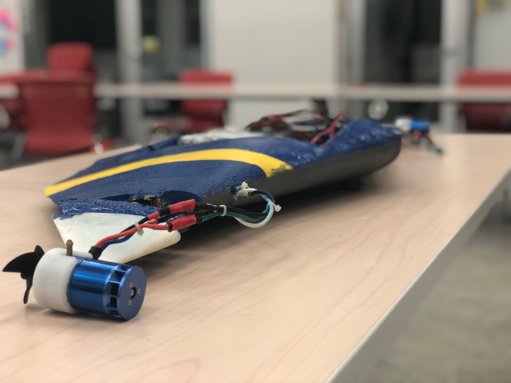
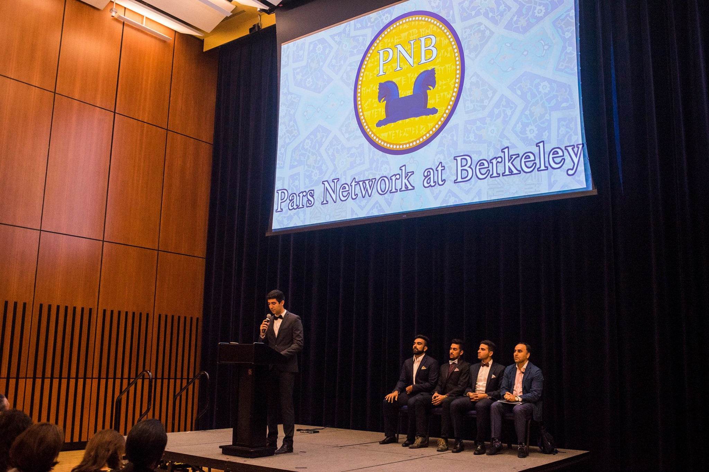
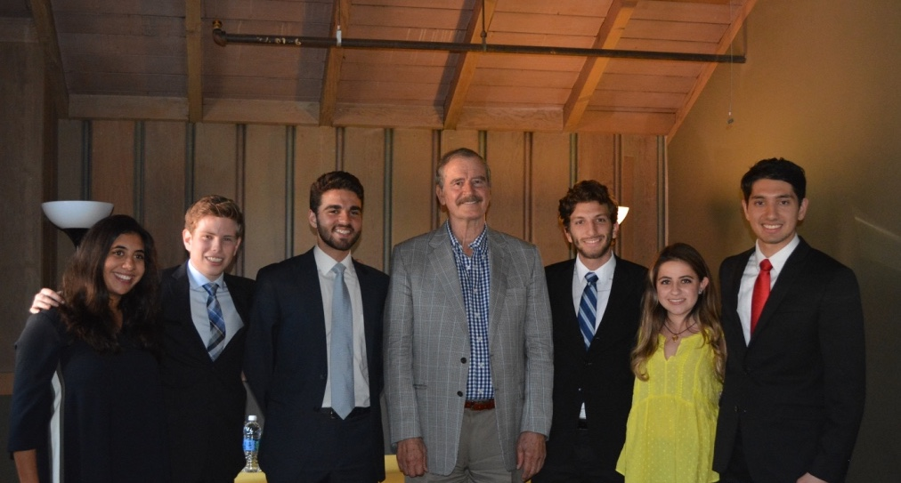
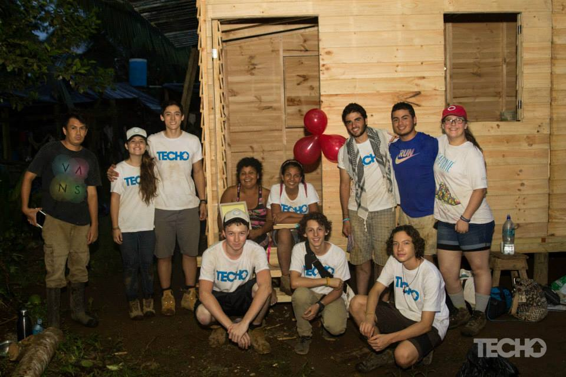

Saunon Malekshahismalekshahi@berkeley.edu
Hello! I'm Saunon.
I am passionate about innovating technologies that improve the ways in which humans locomote. As a Costa Rica-native, I find sustainable development key to engineering design--the seamless integration of robotics in aerospace has permitted this, yielding more efficient, accessible, and sustainable transport solutions. I strive to exploit the intersection of these two disciples through my projects. After graduation I intend to pursue a PhD in aerospace engineering, with an emphasis in biomimetic design. Raised in Costa Rica to Iranian parents, I enjoy flying, exploring nature, discussing politics, and cooking. |  |
Publications and Preprints
Saunon Malekshahi, Luis Diego Monge, Marco Martinez.
Preprint submitted for review to Acta Astronautica, November 2018.
Antonia Bronas, Riley Edmunds, Saunon Malekshahi, Franklin Rice, Faraz Ghahani, Lee-Huang Chen, Adrian K. Agogino, Alice M. Agogino, et al.
Accepted and delivered at the IEEE 2017 Conference on International Robots and Systems (IROS), Vancouver CA.
Raghav Anand, Alexander C. English, Dante Gao, Saunon Malekshahi, Rohan Sinha, Noah Stevenson.
Claimed Honors at the 2016-17 NASA Advanced Air Vehicles Symposium, Langley, VA.
Brian Cera, Lee-Huang Chen, Mallory Daly, Faraz Ghahani, Saunon Malekshahi, Edward Zhu, Adrian K. Agogino, Alice M. Agogino, et al.
Submitted for review at the IEEE 2017 International Conference on Robotics and Automation (ICRA), Singapore.
Aviation |

|
Unmanned, Blended-Wing-Body Freight Aircraft | Natilus Inc. Natilus is a startup developing unmanned cargo aircraft. Currently responsible for aerodynamic design of a 3.4T, blended-wing-body (BWB). Spearheading wing design projects for reduction in induced drag; CFD stability and control simulations using open-source, Vortex Lattice (VLM) and Vortex Panel Method (VPM) based programs; extensive fabrication experience with composite materials. |
|

|
Goldeneye AB1 Supersonic Transport | NASA Advanced Air Vehicles Design Competition, Supersonic Division
Claimed Honors in the 2016-17 NASA Advanced Air Vehicles Symposium with a design submission for a commercial, supersonic aircraft. Goldeneye AB1 features a novel variable-geometry wing designed to deliver high lift in the subsonic and supersonic regimes. Invited to present submission during the winner's symposium at NASA's Langley Research Center from September 25th-26th. Read (whitepaper) for more. |
|

|
Multirole, Atmospheric UAV | NASA Airborne Science Program, Natilus
A proposal for a medium-high altitude, multirole UAV, designed to fulfill various flight envelopes requirements of the NASA Airborne Science Program (ASP). The aircraft features a high aspect ratio, fixed wing design resemblant of the U2 reconnaissance aircraft. The fuselage’s near-square cross-section enables 70% of manufacturing to be done using a single tool. Two Pratt and Whitney Canada (PWC) turbofan engines enable a service ceiling up to 80,000ft. The UAV is primarily operated through an Intelsat communication link, with a service altitude enabling a wide range of atmospheric-study missions to be performed. |
Space |
|
|
Commercial, Low-Latitude Spaceport | Asociacion Centroamericana de Aeronautica y del Espacio, Carao Ventures, DIT Space
A multidisciplinary research effort to establish a low-latitude center for commercial launch services, based out of Costa Rica. Directed a study that devised a three-pronged approach to determine a country’s geospatial ability of launching to orbit, governed by analyses on orbital mechanics, aeronautical compliance, and human-geography impact. The range of reachable orbits is determined from a desired point in latitude; a trajectory modeling tool for conventional rocket systems was developed and used to generate trajectory profiles, given a launch latitude and orbital inclination requirement. Subsequently, key challenges compromising airspace navigation, environmental compliance, and human socio-economic activity are assessed. The technical feasibility framework established in this paper is comprehensive enough to concern all countries exploring the ability of offering spacecraft launch services, with Costa Rica forming the present case-study. The (paper) is highlighted by the methods introduced to determine a country’s aptness for launching spacecraft into orbit. |
|

|
Proyecto Irazu CubeSat | Tecnologico de Costa Rica, Asociación Centroamericana de Aeronautica y del Espacio
The Irazu CubeSat was deployed into orbit on May 11, 2018, on a six-month mission to to measure biomass growth throughout rainforests in Costa Rica, currently being affected by fluctuating levels of atmospheric carbon fixation. Conducted finite element analyses and hardware validation experiments on the mechanical subsystems of the 1U CubeSat, as a visiting researcher at the Costa Rica Institute of Technology. |
Robotics |
|

|
Manta Ray-Inspired UUV for Mapping Subaquatic Environments | Capstone Mechanical Engineering Project Developed a submersible, unmanned vehicle inspired by manta ray anatomy, capable of generating real time renders of underwater terrain. The vehicle planform is a tapered, fixed-wing configuration mimicking that of a manta ray, providing significant volume for sensor and payload storage, and wide sensor-sweep areas. Biomimetic Approach The wing is tapered using varying chord lengths of the NACA 0020 airfoil, determined based off of CAT scans from manta ray pectoral fins. Research initiatives at Princeton led by Richard P. Clark and Alexander J. Smits, exploring fluid dynamics of flapping-wing propulsion, concluded that the static ray wing reduced wake vortices, yielding up to two times more propulsive efficiency in water.Vehicle Design The vehicle is accordingly sized to meet a 17kg payload requirement for neutral buoyancy, and is fully constructed out of composite fiberglass. The vehicle is propelled by two water-cooled brushless motors, with directional control achieved via two servos attached to the pectoral fins. Four primary degrees of freedom are possible; forward acceleration and yaw are achieved by uniform and differential operation of the brushless motors, along with pitch and roll via symmetric and asymmetric actuation of the servos. 3D Surface Generation Four, ultrasonic range finding sensors integrated in the underbelly of the vehicle emit sonar pulses detecting depth of the terrain beneath the craft. Pulse data is collected from the returning sonar on a set time loop, yielding up to 100,000 depth measurements at every second. A cubic interpolation is applied to the obtained data points measurements to construct a three-dimensional surface spanned by the sonar pulses. |

|
Goldeneye Berkeley Autonomous Race Car | Model Predictive Control Lab, Aptiv PLC An autonomous driving research initiative, developed off of the Berkeley Autonomous Race Car platform, performed under the purview of Professor Francesco Borrelli and the Model Predictive Control (MPC) Lab. Two 1/10 scale Ford Fiesta ST RC cars were each equipped with an Ubuntu 64bit Linux computer running ROS, a microcontroller acting as the interface between the Ubuntu OS and RC ECU (Engine Control Unit), an Inertial Measurement Unit (IMU), indoor GPS beacon, Lidar sensor, and High Resolution Machine Vision camera. Lane Keeping a state feedback controller is used to modulate distance from a lane, while maintaining the forward velocity of the vehicle constant. Image feed from the camera is pre-processed and sent to the off-board computer, where an algorithm classifies and detects the lane. Data is relayed back to the vehicle so the controller can minimize distance from the center of the lane.Sensor Fusion An object detection scheme was implemented to accurately detect objects whose position and orientation could be fully determined from a single data set, (i.e. camera or LiDar independently). Objects are distinguished with a bounding box in an image frame, by associating pixels in raw image data with corresponding points in the LiDar point cloud scan. This project is important in the framework of decentralized control, where no knowledge about any of the other agents is assumed or given. Point-to-Point Navigation, Motion Planning a motion planner utilizes data on position of objects in the field space of the vehicle, and executes a two-state controller to generate an optimal, point-to-point trajectory. A motion-planning algorithm plans a trajectory for the vehicle to follow, and dynamically sends target positions to a model predictive, point-to-point controller to guide the vehicle along this path. The MPC controller decides what steering input to give the vehicle based on a linearized model in the local coordinate frame of the vehicle. Trajectories are generated with the maximum turning angle of the wheels as a limiting constraint, after which the trajectory minimizing the distance to the target is chosen. |

|
TT-Unisphere Tensegrity robot featuring actuator-enabled lattice, developed in collaboration with Adrian Agogino at NASA Ames Research Center. Reduced assembly and deployment times compared to preceding tensegrities using cable-governed actuation schemes. Fully modular assembly, delivering radical improvements in deployment and transitioning between passive and actuated states. Open-loop controller implemented wirelessly via RF between a host computer and individual robots configurable to command multiple tensegrities. Enabled a centralized platform for multi-tensegrity collaboration in cluster scouting experiments, i.e. SLAM, detect-and-avoid. |

|
TT-4mini V2 First planetary scouting vehicle capable of climbing inclines exceeding 24 degrees, featuring multi-cable actuation control scheme. Developed tensegrity structure and conducted hardware validation experiments. |

|
TT-4mini V1 Rapid prototyping platform for tensegrity robots that reduces manufacture and assembly time. |
Social Impact |
|

|
Pars Network at Berkeley (PNB) | Co-Founder The first professional Iranian society at UC Berkeley. PNB is a platform seeking to connect students, faculty, and Berkeley to collaborate professionally with the greater Iranian-American community in the San Francisco Bay. Debuted in Fall 2017 with launch gala, PNB is now an active organization hosting keynote talks, industry panels, and more. |
|

|
Latin American Leadership Society (LLS Berkeley) | Forum Chair LLS seeks to create a network of Latin American leaders to shape the future development of the region and generate greater awareness of Latin America. As head of the Forum committee I led the organization of two successful forum events, effectively leading a group of 30+ in handling negotiations, venue logistics, and event publicity. Our filled Spring 2017 LLS Forum featured Vicente Fox, former President of Mexico, preceded by our Fall 2016 edition in graciously hosting Consul General Lugo of Venezuela and Emmy award-nominee Andrés Cediel. |
|

|
TECHO Costa Rica | Coordinator and Volunteer TECHO is a non-profit organization based throughout Latin America and the Carribean that seeks to deliver poverty-alleviation housing and services. Over the course of two years, I led a group of 200+ volunteers in a Carribean construction project that built 9 housing units in underserved communities. I also worked to establish Copa TECHO--a charity soccer tournament that raised $1000 worth of donation proceeds. |